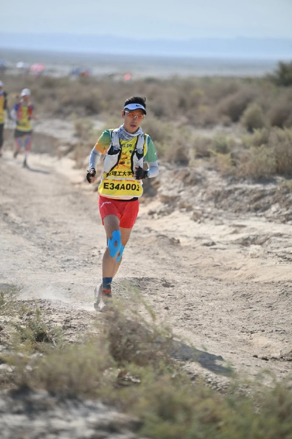
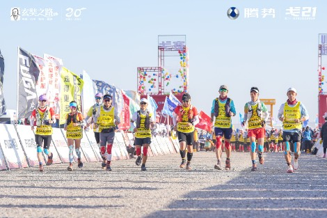

第二十一届玄奘之路戈壁挑战赛
戈21的征尘终于落幕，大半年精诚笃行的热血备战，4天121公里的极限鏖战，转眼间已凝结成永恒。回望这段一辈子仅有一次的A队狂飙之旅，内心依然万潮澎湃、热血沸腾！
人们总以为宏大的征途必然交织着惊天动地的跌宕故事，但真正踏过这片大漠才发现，那血脉偾张的4天3夜竟过得如此飞快，来不及细细品味，便已铸就了属于我们的荣耀传奇。
一切始于去年底那场看似寻常的聚会，在登山老友老庞的牵线引荐下，我结识了一众跑步与越界的神级高手。第一次见面的余领队突如其来地问我：“愿不愿意参加戈壁挑战赛？”体内潜藏的热血瞬间被点燃，我没有丝毫犹豫便一口答应！作为常年跑步的跑者，一场全马早已不在话下，但面对4天121公里恶劣大漠的连轴拉锯，这绝对是一场从未踏足的终极考验与生死亮剑！
备战
3月春风吹响集训号角，我们队伍全面开启集体淬炼！首站置身炎热潮湿的香港，我结识了坚韧不拔的队长Albert、深谋远虑的梁教授，以及后来遗憾因伤退队的小麦战友。第一天公路飙速，第二天麦理浩径硬核爬山，全员斗志昂扬、热血沸腾！
自那时起，我们便开启了极其严苛的连续长距离魔鬼训练，旨在精准模拟戈赛的连续作战节奏，逼迫身体在未完全恢复的极限疲劳中持续高能输出！我更为自己立下铁律：每2-3周安排一次连续4天、累计突破100公里的硬核长距离拉炼！在这样高强度的锤炼下，我的体能实现了飞跃式的狂飙，2026年前7个月平均月跑量高达450公里！
然而，狂暴的拉炼也伴随着伤病的疯狂反扑。6月初第一次戈壁探路，首日终点前2公里，髂胫束剧痛如针扎般袭来，让我几乎无法迈步，所幸靠着树堂的紧急按摩才咬牙挺过；次日大漠沙尘暴肆虐，33公里的赛道被迫在26公里处熔断；第三天遭遇强劲的侧逆风，我在风沙中拼死顶风冲刺，终因双腿不支在进入山谷前被迫坐车。这次折戟让我深刻意识到：想要在大漠称雄，必须在庞大跑量与极限恢复之间找到最精密的平衡，跑少了担心有氧耐力不够，跑多了又怕伤病复发。
7月中旬贵阳集训，三天70多公里山路，哪怕膝盖隐约作痛，全队依然死磕到底、顺利完成并取得佳绩。8月份我远赴非洲，在6天内横跨4国连飙四场全马，面对高低温剧烈交替、1600米海拔落差与连日舟车劳顿，我靠着钢铁意志化解了所有考验，髂胫束毫无异样，这给了我极大的胜利信心！
然而，命运的考验并未停止。9月6日沈阳半马陪老婆参赛，临近终点2公里膝盖再次剧痛；一周后的哈尔滨马拉松，18公里痛感重现，26公里处更是痛入骨髓，成为我职业生涯40多场马拉松中最艰难的肉搏战！此时距离戈赛终极开战仅剩两周多，面对伤病阴霾，我的内心情不自禁地悬了起来。


体验日 27公里
虽然体验日的成绩不计入总榜，但渴望亮剑的配速与热血早已按捺不住！起跑区人潮汹涌，前2公里寸步难行，配速甚至沦落到8分开外。但我沉住气拼力突围，4公里后终于杀出重围，配速拉升至630，心率稳稳压在140。通过对讲机听到队友们或前或后的呼应声，我知道大家都在蓄力。
我保持稳健节奏一路超越，20公里后目之所及已无对手。22公里处一位外籍大胡子强敌超越后跟着我切线带跑，3公里后他逐渐跟不上而被拉开。最后一公里路边志愿者高喊“前面还有4个人！”，我瞬间拉满马力疯狂冲刺，以全场第五、EE组第一的傲人战绩王者破线！
在这场群雄隐忍的试炼中，我为团队拔得头筹，揽下了我多年跑步生涯中第一个沉甸甸的头名！


第一比赛日 33公里

根据上年战绩，我们队伍在6支EE强旅中倒数第二顺位出发，大约早上9点05分枪响时，大漠气温急速飙升。起跑后按照预定计划追随前队530配速，但心率飙破150警告，我果断调至545配速，目光死死锁定前方的队长Albert和涛哥。
长达20公里的孤独狂飙中，对讲机里队友的声音就是我最坚固的精神支柱！20公里处，我一举超越先发的上高金慢队；随后在残酷的强制休息补给点爬山路段，又一鼓作气追上了克服脚抽筋极限的涛哥与Albert！
最后5公里放缓步伐、稳扎稳打，以3小时14分全员安全归巢！首战告捷，我们一举锁定EE组亚军宝座，虽然落后榜首17分钟多，但仅领先第三名2分多钟，杀机四伏！
第二比赛日 34公里
此役我们仅落后榜首30秒发车！枪响瞬间，全队如离弦之箭果断抄斜线近路，1公里后强行与领头羊并肩汇合，瞬间抹平30秒差距！对手见状瞬间提速，队友们纷纷血性跟进，而我却因首夜帐篷失眠导致双腿沉重，内心一度极度焦虑，绝不甘心拖团队后腿！
10公里后我浴血复苏，15公里休息点成功追上状态爆棚的教授、建中与涛哥！凭借一股狠劲，我未待满要求的5分钟便单枪匹马杀出休息点，在16-26公里最残酷的大风爬山段疯狂加速，连超多名EMBA A队高手！
最后7公里顶着烈日暴晒在碎石搓衣板路狂奔，对讲机里传来令人震惊的消息：体重远大于我的建中竟然死死咬在身后仅700米，而队长Albert就在前方不到500米！
骨子里的不屈血性彻底被激活！最后3公里我毅然扔掉所有水壶和能量胶，卸下一切负担发起生死狂飙，直到看见Albert、逼近Albert，并在最后一公里完成彻底反超，最终以3小时32分狂飙破线！
这一天，全队爆发出了惊天动地的团队神力——建中、杨教授、Frank、涛哥、袁光，还有我们唯一的巾帼战神思思，全员燃尽血性疯狂拼搏，硬生生将第三名甩开整整17分钟，为锁定胜局奠定了钢铁根基！


第三比赛日 27公里
终极决战之夜，黄谷驿罕见地下起了戈赛历史上的第一场大雨，雨后璀璨星空下全员斗志沸腾！枪响那一刻，所有人为了心中的终极梦想悍然绝尘而出！我凭着记忆带队抄近路疾驰，迎着朝阳追击前方两个强悍身影，误以为是领先几天的强敌。
在长达14公里的死磕追击后，我拼尽全力追上一看，竟是我们的涛哥和Frank！这一误判打乱了比赛节奏，队长Albert已不见踪影，对讲机一片沉寂。
我咬紧牙关再次发动狂暴追击，一路狂飙至21公里山谷。最后4公里面对冰冷刺骨的涉水爬山赛道，我拖着酸胀麻木的双腿在密集人群中极限穿针引线。当从对讲机得知Albert已率先冲线时，内心的停顿一瞬间袭来，但看到身边疯狂加速拼杀的各路队伍，我的热血再次被点燃，重新拉满配速雷霆冲过终点！
看到终点线前早已张开双臂等待的战友们，激动的泪水再也抑制不住地夺眶而出！我们再次拉开与追兵的差距，如愿将沉甸甸的EE组亚军奖杯抱回理大！这是属于每一个理大人的至高荣耀！


赛后
这场载入史册的辉煌胜利，绝非一人之功，如果没有整个团队倾心倾力的极限付出，绝不可能铸就今日的奇迹！


余领队：没有他，就没有港理工戈21这支铁血之师，这句话绝非夸大！从组建队伍的举步维艰、到处拉人组阁，到每一次训练亲力亲为准备补给、递水呐喊，他付出了难以想象的心血。戈壁拉炼时我们同住一室，他总是忙碌服务到深夜，凌晨又满血带队出发，这种无私奉献的精神是全队最坚固的基石！
国辉教练：作为我们的战术大脑，他为我们量身打造了极为专业科学的训练计划与备战策略。尽管首次香港拉炼就不幸崴脚，但他依然忍痛全程陪同贵阳集训、深圳爬山与戈壁拉炼，为全队前前后后操碎了心，极其尽职尽责！
畅姐：她是我们全队最强大的精神支柱与情绪价值源泉！香港拉炼只睡几小时就接站守护，出征大会上分享无价经验，更能精准叫出每位队友的名字！比赛中她手握对讲机时刻守护状态，补给站秒级递水送吃的计算出站时间，赛后深度复盘；甚至赛前一天租电单车全程陪伴雷音寺晨跑，把爱与能量注入了每一个环节！
小靖师傅：我们神级的手艺放松大师！没有他，我早已惨败于伤病折磨。从诊断潜在风险、传授开髋动作，到每天赛前精准打肌贴、赛后用双手不停揉捏急救放松，他凭一己之力抗下了全体队员的伤病防线，让我在4天高强度鏖战中髂胫束无一次疼痛，奇迹般安然通关！
小鱼：全能营地女强人！带病上阵却全心全意保障大后方。每天凌晨准备热水，随后火速赶往下一站，把简陋的沙漠帐篷布置得无比温馨——泡面、牛肉、茶水、点心应有尽有，硬生生把残酷的大漠变成了比家还幸福的避风港！
队友与后盾
队友们：EE组战友Albert、涛哥、梁教授、杨教授、Frank、建中、袁光，以及巾帼女神思思！无论曾经是多次集训的老友还是初见的网友，踏上赛道的那刻，我们就是生死与共、血脉相连的铁血战友！还有B队与C队的坚韧伙伴们，你们注入了无穷的精神力量，期待未来你们身披A队战袍，继续为理大续写新的辉煌！
A+蒋明师兄：单枪匹马一口气踏平121公里戈壁的壮举，如明灯般深深震撼并激励着我们每一个人！
后方坚强后盾：还有无数未能亲临戈壁的理大人，你们在群里昼夜不停的呐喊助威、喝彩声浪，以及捐款捐物的大力支持，成为了我们在前方血战到底的最强后盾，这份深情我们永生铭记！

结尾感悟
人生未必需要超越，重要的是做到。
漫长而残酷的赛道上，心灵经历了前所未有的洗礼。这些年我们总在喊着挑战自我、超越自我，但真正走过这片大漠才深刻悟出：人生未必非要不断去超越什么，能够脚踏实地倾尽全力去“做到”，便已是莫大的英雄！
赛道上更有刻骨铭心的感悟：痛苦的时候，再坚持一下！
也许眼前路途险阻，一步一痛，但只要全队心手相连、咬牙向前，就终将穿透黑暗走出痛苦。而当胜利破线的荣耀时刻轰然到来，此前所承受的一切磨难与汗水，便都有了惊艳岁月的无上意义！
回望来时路，我更加坚信：梦想的宏大意义，绝不仅在于终点线上的那一刻辉煌，更在于它赋予了我们为彼此勇敢出发、并肩血战到底的无限担当与勇气！
人生不必事事追求完美，也不必时时想着超越。只要全队心有所想，勇敢去闯；哪怕路途再艰难，大家再坚持一下！终有一天，那个曾经遥不可及的璀璨梦想，必将在我们持续不懈的努力与汗水中，震撼照进现实！
人生未必需要超越，重要的是做到。
戈21影像
点击任意照片查看原图；方向键可切换。